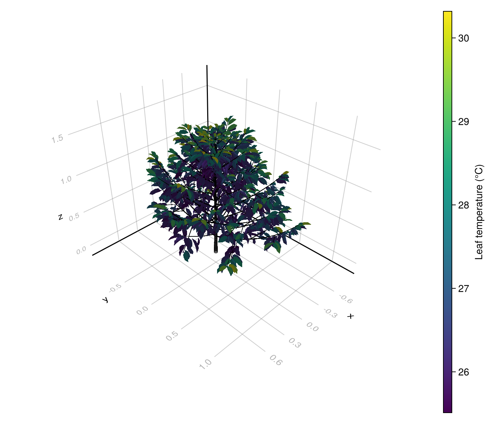

Whole-Plant Simulation From an MTG
A Multi-scale Tree Graph (MTG) describes a plant as connected organs, such as a plant with branches and leaves. It can also store organ attributes and 3D geometry. If you already have an MTG, you can use it to apply the same models to all its leaves.
We first build a tiny plant with two leaves to make each step visible. Then we use a coffee plant supplied with the package and colour its 3D leaves by simulated temperature. The model combination is the same as in Several objects.
Create a plant with two leaves
Node connects each new organ to its parent. In this example, the scene contains one plant, and the plant contains two leaves. A model selector such as Many(scale=:Leaf) will use the Leaf label to find them.
using PlantBiophysics, PlantSimEngine, PlantMeteo, Dates, DataFrames
using MultiScaleTreeGraph
mtg_root = Node(MultiScaleTreeGraph.NodeMTG("/", "Scene", 1, 0))
mtg_plant = Node(mtg_root, MultiScaleTreeGraph.NodeMTG("+", "Plant", 1, 1))
mtg_sun = Node(mtg_plant, MultiScaleTreeGraph.NodeMTG("+", "Leaf", 1, 2))
mtg_shade = Node(mtg_plant, MultiScaleTreeGraph.NodeMTG("+", "Leaf", 2, 2))See the MultiScaleTreeGraph introduction for the meaning of the MTG relation symbols and scales. For this simulation, the useful point is that we can associate each leaf's inputs and results with its own node.
Supply weather and leaf inputs
The leaves share three hourly weather records. The sunlit leaf receives more absorbed light than the shaded leaf; both keep those light inputs constant throughout this example.
weather = Weather([
Atmosphere(T=20.0, Wind=1.0, P=101.3, Rh=0.65, duration=Hour(1)),
Atmosphere(T=23.0, Wind=1.5, P=101.3, Rh=0.60, duration=Hour(1)),
Atmosphere(T=25.0, Wind=2.0, P=101.3, Rh=0.55, duration=Hour(1)),
])
initial_statuses = IdDict(
mtg_sun => Status(Ra_SW_f=20.0, sky_fraction=1.0, aPPFD=1500.0, d=0.03),
mtg_shade => Status(Ra_SW_f=8.0, sky_fraction=0.5, aPPFD=600.0, d=0.02),
)Ra_SW_f is in W m⁻² of leaf, aPPFD in µmol photons m⁻² of leaf s⁻¹, and d in m. IdDict associates a separate Status with each exact leaf node. We could also read these inputs from existing MTG attributes, as in the coffee example below.
Associate the models with the leaves
CompositeModel reads the MTG and creates the objects to simulate. status=node -> ... provides initial values for each node; here the scene and plant have no model inputs, so the function returns nothing for them.
applications = (
ModelSpec(Monteith(); name=:energy_balance, on=Many(scale=:Leaf)),
ModelSpec(Fvcb(); name=:photosynthesis, on=Many(scale=:Leaf)),
ModelSpec(Medlyn(0.03, 12.0); name=:stomatal_conductance, on=Many(scale=:Leaf)),
)
readable_id = node -> Symbol(lowercase(string(symbol(node))), "_", node_id(node))
node_kind = node -> Symbol(symbol(node)) == :Scene ? :scene : :plant
scene = CompositeModel(
mtg_root;
id=readable_id,
kind=node_kind,
status=node -> get(initial_statuses, node, nothing),
applications=applications,
environment=weather,
)
[(object_id=object_id(scene, node), aPPFD=model_status(scene, node).aPPFD)
for node in (mtg_sun, mtg_shade)]2-element Vector{@NamedTuple{object_id::ObjectId{Symbol}, aPPFD::Float64}}:
(object_id = ObjectId{Symbol}(:leaf_3), aPPFD = 1500.0)
(object_id = ObjectId{Symbol}(:leaf_4), aPPFD = 600.0)id gives the simulation objects readable names based on their MTG node numbers. model_status(scene, node) lets us inspect a leaf using its original node, without relying on its position in a list.
Save leaf temperature at each timestep
For a large plant, saving every variable may be unnecessary. OutputRequest lets us keep only the leaf temperature Tₗ, giving this saved series the name :leaf_temperature:
simulation = run!(
scene;
steps=length(weather),
outputs=OutputRequest(
Many(scale=:Leaf), :Tₗ;
name=:leaf_temperature,
application=:energy_balance,
),
)
DataFrame(collect_outputs(simulation, :leaf_temperature; sink=nothing))| Row | timestep | datetime | scale | process | application_id | variable | object_id | value |
|---|---|---|---|---|---|---|---|---|
| Int64 | DateTime | Symbol | Symbol | Symbol | Symbol | Symbol | Float64 | |
| 1 | 1 | 2026-09-23T08:35:30.626 | Leaf | energy_balance | energy_balance | Tₗ | leaf_3 | 17.6796 |
| 2 | 1 | 2026-09-23T08:35:30.626 | Leaf | energy_balance | energy_balance | Tₗ | leaf_4 | 17.6854 |
| 3 | 2 | 2026-09-23T08:35:30.626 | Leaf | energy_balance | energy_balance | Tₗ | leaf_3 | 20.0705 |
| 4 | 2 | 2026-09-23T08:35:30.626 | Leaf | energy_balance | energy_balance | Tₗ | leaf_4 | 20.1947 |
| 5 | 3 | 2026-09-23T08:35:30.626 | Leaf | energy_balance | energy_balance | Tₗ | leaf_3 | 21.5407 |
| 6 | 3 | 2026-09-23T08:35:30.626 | Leaf | energy_balance | energy_balance | Tₗ | leaf_4 | 21.7784 |
There are six saved values: two leaves × three timesteps. The object identity and timestep indicate which leaf and weather record each result belongs to. The latest values are also accessible from the source nodes:
[(object_id=object_id(scene, node), Tₗ=model_status(scene, node).Tₗ)
for node in (mtg_sun, mtg_shade)]2-element Vector{@NamedTuple{object_id::ObjectId{Symbol}, Tₗ::Float64}}:
(object_id = ObjectId{Symbol}(:leaf_3), Tₗ = 21.540676816023538)
(object_id = ObjectId{Symbol}(:leaf_4), Tₗ = 21.77843069171625)The simulation stores its changing values separately from the MTG's attributes. To use results in another tool that reads MTG attributes, copy the values you need back to the nodes explicitly.
Read and visualize a coffee plant
An OPF file contains an MTG and its 3D geometry. The bundled coffee plant also contains absorbed PAR, absorbed near-infrared radiation, and visible sky fractions, calculated previously with Archimed-ϕ. We reuse these supplied radiation values; this example does not calculate new light interception.
using PlantBiophysics, PlantSimEngine, PlantMeteo, MultiScaleTreeGraph
using PlantGeom, CairoMakie, Dates, DataFrames
coffee = read_opf(joinpath(pkgdir(PlantBiophysics), "test", "inputs", "scene", "opf", "coffee.opf"))
coffee_weather = read_weather(
joinpath(pkgdir(PlantMeteo), "test", "data", "meteo.csv"),
:temperature => :T,
:relativeHumidity => (values -> values ./ 100) => :Rh,
:wind => :Wind,
:atmosphereCO2_ppm => :Cₐ,
date_format=DateFormat("yyyy/mm/dd"),
)We set the model parameters explicitly below. Each leaf's absorbed shortwave radiation is the sum of its absorbed PAR and near-infrared radiation. Multiplying absorbed PAR in W m⁻² by 4.57 converts it to absorbed photon flux in µmol m⁻² s⁻¹. Both are already expressed per unit leaf area in this fixture.
coffee_models = (
Monteith(aₛₕ=2, aₛᵥ=1, ε=0.955, maxiter=10, ΔT=0.01),
Fvcb(Tᵣ=25.0, JMaxRef=250.0, VcMaxRef=200.0, RdRef=0.6, θ=0.853, α=0.24),
Medlyn(-0.03, 12.0),
)
coffee_scene = CompositeModel(
coffee;
applications=Tuple(
ModelSpec(model; name=process(model), on=Many(scale=:Leaf))
for model in coffee_models
),
environment=coffee_weather,
status=node -> Symbol(symbol(node)) == :Leaf ? Status(
Ra_SW_f=node[:Ra_PAR_f] + node[:Ra_NIR_f],
aPPFD=node[:Ra_PAR_f] * 4.57,
sky_fraction=node[:sky_fraction],
d=0.3,
) : nothing,
)
coffee_simulation = run!(
coffee_scene;
steps=length(coffee_weather),
outputs=OutputRequest(Many(scale=:Leaf), :Tₗ;
name=:leaf_temperature, application=:energy_balance),
)
coffee_results = DataFrame(collect_outputs(coffee_simulation, :leaf_temperature; sink=nothing))
first(DataFrames.select(coffee_results, :timestep, :datetime, :object_id, :value), 6)| Row | timestep | datetime | object_id | value |
|---|---|---|---|---|
| Int64 | DateTime | Int64 | Float64 | |
| 1 | 1 | 2016-06-12T12:00:00 | 100 | 29.6983 |
| 2 | 1 | 2016-06-12T12:00:00 | 1000 | 25.259 |
| 3 | 1 | 2016-06-12T12:00:00 | 1001 | 28.3666 |
| 4 | 1 | 2016-06-12T12:00:00 | 1003 | 25.3881 |
| 5 | 1 | 2016-06-12T12:00:00 | 1004 | 26.6853 |
| 6 | 1 | 2016-06-12T12:00:00 | 1006 | 25.4549 |
Absorbed radiation stays constant across the three records. The characteristic dimension d=0.3 m is also prescribed for every leaf rather than derived from its mesh.
To visualize the second timestep, select its rows and use source_node to find the corresponding MTG node. We store temperature under a new attribute :Tₗ_plot, which PlantGeom can use to colour each leaf.
for row in eachrow(subset(coffee_results, :timestep => ByRow(==(2))))
source_node(coffee_scene, row.object_id)[:Tₗ_plot] = row.value
end
figure, axis, plot = plantviz(coffee; color=:Tₗ_plot, figure=(size=(700, 600),))
colorbar(figure[1, 2], plot; label="Leaf temperature (°C)")
save("coffee_temperature.png", figure)
The colours show how leaves under different absorbed radiation and sky exposure respond to the same weather. To drive the plant with changing light, provide new radiation inputs at each step, as in Several time steps, or couple a light model using the appropriate leaf-area inputs.